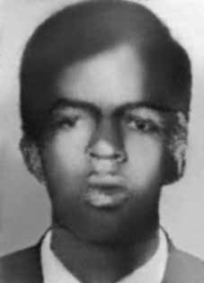

Raimundo
Eduardo
da Silva
CIRCUNSTÂNCIAS DA MORTE
Raimundo Eduardo da Silva morreu em 5/1/1971, depois de ser torturado no Destacamento de Operações de Informações – Centro de Operações de Defesa Interna (DOI-CODI), em São Paulo. A falsa versão divulgada relata que Raimundo teria falecido em virtude de facadas perpetradas por outro preso, conforme consta nos relatórios dos ministérios da Marinha e da Aeronáutica. Contudo, no mesmo ano da ocorrência dos fatos, foram encontradas novas informações que contradizem esta versão.
A morte de Raimundo ganhou repercussão na imprensa quando o padre Giulio Vicini e a assistente social Yara Spadini foram presos e torturados depois de serem pegos levando o modelo para impressão de um panfleto no qual constavam denúncias sobre a morte de Raimundo. A partir dessas prisões é que se localizaram mais informações sobre as circunstâncias de sua morte.
Na Apelação nº 38.650, no Superior Tribunal Militar (STM), referente à defesa do padre Giulio Vicini e da assistente social Yara Spadini, consta: no dia 23 de novembro de 1970, o operário Raimundo fora golpeado por um pontaço de faca, em uma briga comum. Fora operado, estava internado em uma casa de saúde (a sentença fala em SAMCIL), sendo retirado do leito hospitalar por investigadores quando ainda necessitava de tratamento médico.
Apurou mais que o rapaz morrera cerca de um mês e meio depois de haver recebido a facada, no dia 5 de janeiro, no Hospital do Exército em São Paulo, onde se encontrava a disposição do CODI, conforme documentos oferecidos pelo DEOPS e que se encontram às folhas 138 e 141. Na mesma peça, continua: A morte do operário Raimundo vinha sendo mantida em rigoroso sigilo. É certo que em Mauá a notícia circulará de boca em boca e por intermédio do panfleto de fls. Os fatos, todavia, eram desconhecidos do grande público, ou, pelo menos, pormenores do caso eram ignorados, como ignorados são, até hoje, os do desaparecimento do deputado Rubens Paiva e os da morte do operário Olavo Hansen.
A informação de Yara e Giulio estaria correta com relação à internação de Raimundo, recuperando-se de uma facada. Entretanto, o irmão do resistente, Hélio Jerônimo da Silva, contestou que a morte tivesse ocorrido no Hospital Geral do Exército. Segundo Hélio, na ocasião em que foi ao referido hospital procurar notícias sobre o irmão, foi informado por um agente da repressão, não identificado nominalmente, que Raimundo estava, na verdade, no DOI-CODI.
Ainda de acordo com Hélio, Raimundo foi sequestrado por agentes do DOI-CODI no dia 23/12/1970. Deste então, sua mãe passou a levar roupas e alimentos para o irmão na mencionada unidade militar, mesmo sem ter acesso a ele, já que as visitas eram proibidas. Apesar de não terem visto Raimundo, os agentes de segurança confirmaram que ele se encontrava preso naquelas dependências. No dia 4/1/1971, um dos policiais recusou-se a receber os alimentos ao afirmar que seu destinatário já estava “fedendo há muito tempo”.
Um mês depois, seus familiares conseguiram a certidão de óbito. A necropsia foi feita pelos médicos-legistas João Grigorian e Orlando José Bastos Brandão, no dia 22/1/1971. Nenhuma tortura foi relatada no laudo e a causa de morte registrada foi “peritonite fibrino purulenta”. Ao procurar o corpo de Raimundo no Instituto Médico-Legal (IML), os familiares foram informados que ele já havia sido enterrado como indigente no cemitério de Guaianazes, em janeiro de 1971.
Três anos depois, os restos mortais de Raimundo foram exumados e sepultados no cemitério de Santa Lídia, na cidade de Mauá, São Paulo. A Comissão Estadual da Verdade do Estado de São Paulo (CEV-SP) realizou audiência pública dedicada ao caso de Raimundo Eduardo da Silva, no dia 15/1/2013.
Raimundo Eduardo da Silva died on January 5, 1971, after being tortured at the Information Operations Detachment – Internal Defense Operations Center (DOI-CODI), in São Paulo. The false version published reports that Raimundo died as a result of stab wounds perpetrated by another prisoner, as stated in reports from the Ministries of the Navy and Air Force. However, in the same year the events occurred, new information was found that contradicted this version.
Raimundo's death received repercussions in the press when priest Giulio Vicini and social worker Yara Spadini were arrested and tortured after being caught taking the model for printing a pamphlet in which there were accusations about Raimundo's death. It was from these arrests that more information was found about the circumstances of his death.
In Appeal No. 38,650, in the Superior Military Court (STM), referring to the defense of Father Giulio Vicini and social worker Yara Spadini, it is stated: on November 23, 1970, the worker Raimundo was struck by a knife, in a common fight. He had undergone surgery, was admitted to a nursing home (the sentence refers to SAMCIL), and was removed from the hospital bed by investigators when he still needed medical treatment.
It was further discovered that the boy had died about a month and a half after being stabbed, on January 5th, at the Army Hospital in São Paulo, where the CODI was available, according to documents offered by DEOPS and found on pages 138 and 141. In the same piece, it continues: The death of the worker Raimundo had been kept strictly confidential. It is certain that in Mauá the news will circulate by word of mouth and through the pamphlet on pages. The facts, however, were unknown to the general public, or, at least, details of the case were ignored, as are, to this day, ignored those of the disappearance of deputy Rubens Paiva and those of the death of worker Olavo Hansen.
Yara and Giulio's information would be correct regarding Raimundo's hospitalization, recovering from a stab wound. However, the resister's brother, Hélio Jerônimo da Silva, disputed that the death had occurred at the Army General Hospital. According to Hélio, when he went to the aforementioned hospital to look for news about his brother, he was informed by a repression agent, not identified by name, that Raimundo was, in fact, at DOI-CODI.
Still according to Hélio, Raimundo was kidnapped by DOI-CODI agents on 12/23/1970. From then on, his mother began taking clothes and food to his brother in the aforementioned military unit, even without having access to him, as visits were prohibited. Despite not having seen Raimundo, security agents confirmed that he was trapped in those premises. On January 4, 1971, one of the police officers refused to receive the food, stating that the recipient had been “stinking for a long time”.
A month later, his family got the death certificate. The autopsy was carried out by coroners João Grigorian and Orlando José Bastos Brandão, on 1/22/1971. No torture was reported in the report and the cause of death recorded was “purulent fibrinous peritonitis”. When searching for Raimundo's body at the Instituto Médico-Legal (IML), family members were informed that he had already been buried as a pauper in the Guaianazes cemetery, in January 1971.
Three years later, Raimundo's remains were exhumed and buried in the Santa Lídia cemetery, in the city of Mauá, São Paulo. The State Truth Commission of the State of São Paulo (CEV-SP) held a public hearing dedicated to the case of Raimundo Eduardo da Silva, on 1/15/2013.
Raimundo Eduardo da Silva murió el 5 de enero de 1971, tras haber sido torturado en el Destacamento de Operaciones de Información – Centro de Operaciones de Defensa Interna (DOI-CODI), en São Paulo. La versión falsa publicó informes de que Raimundo murió producto de puñaladas propinadas por otro recluso, según consta en informes de los Ministerios de Marina y Fuerza Aérea. Sin embargo, en el mismo año en que ocurrieron los hechos se encontró nueva información que contradecía esta versión.
La muerte de Raimundo tuvo repercusión en la prensa cuando el sacerdote Giulio Vicini y la trabajadora social Yara Spadini fueron detenidos y torturados tras ser sorprendidos tomando el modelo para imprimir un panfleto en el que había acusaciones sobre la muerte de Raimundo. Fue a partir de estas detenciones que se encontró más información sobre las circunstancias de su muerte.
En el Recurso N° 38.650, ante el Tribunal Superior Militar (STM), refiriéndose a la defensa del padre Giulio Vicini y de la trabajadora social Yara Spadini, se afirma: el 23 de noviembre de 1970, el trabajador Raimundo fue alcanzado con un arma blanca, en una pelea común. Fue operado, ingresado en una residencia de ancianos (la sentencia se refiere a SAMCIL) y los investigadores lo sacaron de la cama del hospital cuando aún necesitaba tratamiento médico.
Se descubrió además que el niño había muerto aproximadamente un mes y medio después de haber sido apuñalado, el 5 de enero, en el Hospital Militar de São Paulo, donde estaba disponible el CODI, según documentos ofrecidos por el DEOPS y encontrados en las páginas 138 y 141. En el mismo artículo continúa: La muerte del trabajador Raimundo había sido mantenida en estricta confidencialidad. Es seguro que en Mauá la noticia circulará de boca en boca y a través del folleto en páginas. Los hechos, sin embargo, eran desconocidos para el público en general, o, al menos, se ignoraban los detalles del caso, como se desconocen hasta el día de hoy los de la desaparición del diputado Rubens Paiva y los de la muerte del trabajador Olavo Hansen.
La información de Yara y Giulio sería correcta sobre la hospitalización de Raimundo, recuperándose de una puñalada. Sin embargo, el hermano del resistente, Hélio Jerônimo da Silva, negó que la muerte se hubiera producido en el Hospital General del Ejército. Según Hélio, cuando acudió al citado hospital a buscar noticias sobre su hermano, fue informado por un agente de represión, no identificado por su nombre, que Raimundo, efectivamente, se encontraba en el DOI-CODI.
Aún según Hélio, Raimundo fue secuestrado por agentes del DOI-CODI el 23/12/1970. A partir de entonces, su madre comenzó a llevar ropa y alimentos a su hermano en la referida unidad militar, incluso sin tener acceso a él, ya que las visitas estaban prohibidas. A pesar de no haber visto a Raimundo, agentes de seguridad confirmaron que se encontraba atrapado en ese local. El 4 de enero de 1971, uno de los policías se negó a recibir la comida, afirmando que el recipiente “apestaba desde hacía mucho tiempo”.
Un mes después, su familia obtuvo el certificado de defunción. La autopsia fue realizada por los médicos forenses João Grigorian y Orlando José Bastos Brandão, el 22/01/1971. En el informe no se menciona ninguna tortura y la causa de la muerte registrada fue “peritonitis fibrinosa purulenta”. Al buscar el cuerpo de Raimundo en el Instituto Médico-Legal (IML), los familiares fueron informados que ya había sido enterrado como indigente en el cementerio de Guaianazes, en enero de 1971.
Tres años después, los restos de Raimundo fueron exhumados y enterrados en el cementerio de Santa Lídia, en la ciudad de Mauá, São Paulo. La Comisión Estatal de la Verdad del Estado de São Paulo (CEV-SP) realizó una audiencia pública dedicada al caso Raimundo Eduardo da Silva, el 15/01/2013.